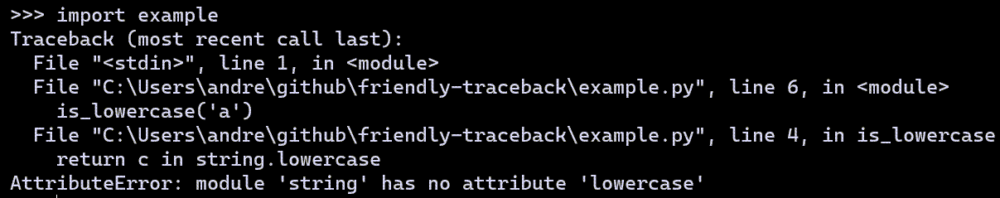

Multiple tracebacks¶
In addition to providing additional information about the actual cause
of an exception, compared with a traditional traceback, the traceback
itself is formatted differently than a traditional Python traceback.
You can choose to see three different tracebacks:
friendly_tb, python_tb, debug_tb.
Of these three, python_tb is designed to reproduce fairly accurately
what would be seen if a program would be run without
friendly-traceback. Still, it does include some minor differences
depending on the context.
In this section, we compare these three tracebacks with the normal Python traceback in three different settings:
Running a module from the command line.
Importing a module.
Writing code in the interpreter.
For the first two, the module we will run contains the following:
import string
def is_lowercase(c):
return c in string.lowercase
is_lowercase('a')
Running a module from the command line¶
First, we show the result of running a module containing the code shown above using Python.

Next, we run the same module using Friendly-traceback
showing the python_tb case. In this particular case,
the only difference with the
normal Python traceback is the addition of an empty line preceding
the traceback, with the goal of increasing readability.

With the friendly_tb option, we see a “hint” added to the traceback;
in some instances, no such hint can be provided.

Finally, we use the debug_tb to show the real traceback produced
when running this example using Friendly-traceback: it includes
code from Friendly-traceback itself.

Importing a module¶
Let’s compare what happens if we import the same module instead from a console, starting with Python’s own.
{kind=link}
When doing the same with Friendly-traceback, it is the friendly_tb
that is shown by default. It has three differences compared with
the normal Python traceback:
The name of the console is different.
Paths are shortened (more about this below)
As before, any “hint” available is automatically shown.

We can see the simulated Python traceback by entering python_tb();
as before, and except for the name of the console,
the only difference with a normal Python traceback is the addition of
an empty line preceding the traceback.
{kind=link}
Finally, we can use debug_tb() to see the complete traceback.
{kind=link}
Using the interpreter¶
When using a normal Python interpreter, the traceback generated includes only a list of “files” without including the actual content of the line that was executed.

As before, when doing the same with Friendly-traceback,
it is the friendly_tb that is shown by default.
It includes the line of code that was executed for each “file”.

The same is true for the python_tb(); we could remove this information
to make it more similar to a “true” Python traceback but we feel that
the loss of information would not be helpful.
{kind=link}
As before, we can use debug_tb() to see the complete traceback.

Since paths can be quite long, when showing information about an
exception, Friendly-traceback will attempt to reduce the length
of the path shown. We’ve seen before an example where HOME_DIR
was substituted for the user’s home directory. A more significant
reduction is shown when the path for a module from the Python standard library
is shown.

Lines suppressed: recursion example¶
Consider the following:
def a():
b()
def b():
a()
a()
Try running this using Python. Not only will you get a
RecursionError but you’ll get something like 2000 lines included.
This is not exactly user friendly. It is also what
would be shown if we used debug_tb(). Let’s skip this, and
only look at the output from the other two tracebacks, starting
with friendly_tb() which is shown by default.
{kind=link}
As a rule, and not only for the RecursionError cases,
the friendly_tb default will only show a few intermediate lines
of code, to avoid filling the screen with too much information.
By contrast, such suppression is only done in the RecursionError
cases for the python_tb.

The final example is that of friendly_tb shown using Rich for
formatting and French as the language used.